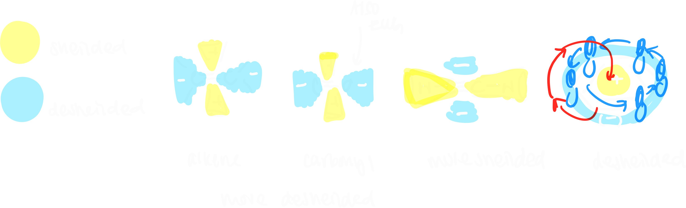
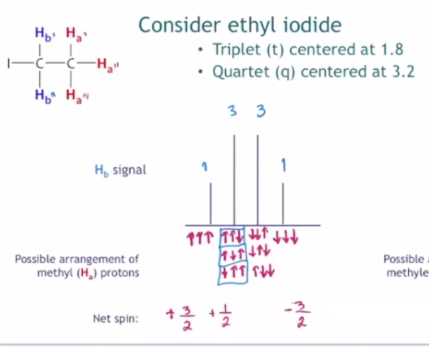

Contents:
how to solve problems
mass spec
- this tells us the mass of the compound, number of carbons, number of hydrogens and other atoms
- find the base peak and the molecular ion peak
- take special notice to these peaks:
- Br:
- Cl:
- take special notice to these peaks:
- use the rule of 13 to try and solve for initial ratio
- solve for units of saturation
IR
- look for a carbonyl group (1880-1640)
- amide (the C-N bond causes resonance, lowering the frequency)
- 1700-1640
- NH2: 3350-3180
- NH: 3330
- NH bend: 1640 - 1550
- carboxylic acid
- 1710
- OH: 3400-2400
- CO stretch: 1320 - 1110
- ketone
- 1715
- C-CO-C: 1300-1100
- aldehyde
- 1725
- aliphatic CH: 2850, 2760
- ester
- 1735
- C-O stretch, two bands, 1300-1100
- acyl chloride
- C-Cl: 730-550
- anhydride
- band 1: 1810
- band 2: 1760
- amide (the C-N bond causes resonance, lowering the frequency)
- look for alcohol, amine, nitrile
- alcohol: 3400-3300 (broad), 3650-3600 (sharp)
- CO stretch: 1260 - 1000
- amine 3500-3300, CN stretch (1350-1000):
- primary (NH2): 2 bands (1640-1510), NH bend (800)
- secondary (NH): 1 band 1500, NH bend (800)
- tertiary (N): no band, just CN stretch (1350-1000)
- alcohol: 3400-3300 (broad), 3650-3600 (sharp)
- triple bonds
- CN: 2250
- CC: weak/sharp near 2150 and acetyle CH near 3300
- double bonds: 1650
- nitro group
- review CH groups
- 3000ish sp3
H NMR
C NMR
questions
- empirical vs. molecular
- index of hydrogens
- rule of thirteen
tutorials
Elemental Analysis and IHD (review) (Tutorial 1)
Learning Objectives:
- empirical vs. molecular formula
- calculate and distinguish
- identify components of elemental analysis equipment
- define Index of Hydrogen δ or IHD
- calculate IHD from:
- chemical structure
- molecular formulae
- amu
- rule of 13
- provide possible structures using provided and calculated IHD
NMR:
- Identify regions of the electromagnetic spectrum and identify which characterization methods exploit each specific region (in the context of CHEM 245)
- Explain nuclear spin in the context of NMR
- Distinguish between alpha (α) and beta (β) spin states
- Predict which spin state (α or β) is the more populated
- Describe how irradiation produces an NMR signal (simply)
- Define chemical shift in terms of electronic and magnetic environments
- Identify and use the terms “upfield” and “downfield”
- Identify and use the terms “shielded” and “deshielded”
—
- historically: incinerated compound in presence of O2
- canisters caught the oxidized versions of the compound
- types of EA
- empirical vs. molecular formula
- problem types:
- find empirical formula based on CxHyOz sample submitted for analysis
- write out balanced combustion equation
- calculate mmol of atomic elements present in sample based on given H2O and CO2 (combustion products)
- find mass of atomic elements present in sample
- calculate percent weight of atomic elements present in sample
- check if precents sum to 100% (or if don’t there is oxygen in sample)
- assume 100g of sample, % is g of atomic elemental
- divide through by lowest mole to find empirical formula
- find molecular formula given empirical formula: MF = XEF
- $$IHD = \frac{\# \text{ H saturated compound} - \# \text{ H unsaturated compound}}{2}$$
- group V: add one H
- group VI: no change
- group VII: subtract one H
- problem types:
- calculate IHD:
- check for molecules from the mentioned groups. apply proper addition or subtraction of saturated hydrogens
- calculate IHD:
- rule of 13: high resolution mass spectroscopy (HRMS) gives us mass in amu
- $$\frac{M}{13} = n + \frac{r}{13}$$
- CnHn + r and $$IHD = U = \frac{n-r+2}{2}$$
- steps to solve problem:
- use rule of 13 calculate base molecular formula and IHD by dividing the given amu by 13 and setting the fraction part as r
- adjust base molecular and IHD for addition of other molecules if required.
- subtract from the base molecular formula
- add to IHD/U
- $$\frac{M}{13} = n + \frac{r}{13}$$
- find empirical formula based on CxHyOz sample submitted for analysis
Rule of 13, Nuclear Magnetic Resonance (NMR) Spectroscopy
Fundamentals (Tutorial 2)
- spectroscopy: study of interaction between matter and EMR
- NMR: interaction of EMR and nucleus of atom
- $13$C and $1$H
- NMR active nuclei: odd mass or odd atomic number
- quantized spin angular momentum ms and magnetic momentum
- nuclear spin quantum number I: $13$C: 1/2 and $1$H: 1/2
- allowed spin states: 2I + 1
- in absence of magnetic field, all spin states are degenerate
- nuclear spin in an applied field
- when charged particle spins, creates magnetic field
- spin states no longer degenerate in applied magnetic field
- aligned: lower energy
- oppsing: higher energy
- alpha/beta spin states
- alpha: aligned with field (lower energy)
- beta: opposing the field (higher energy)
- when external magnetic field applied, degenerate spin states split into two states, lower energy state is aligned with magnetic field and higher energy state
- energy gap increases with increasing magnetic field strength
Chemical shift, 13C (Tutorial 3)
- how many α and β will there be?
- boltzmann distribution
- need nuclei (alpha or beta) to be in excess to see any signal
- excess nuclei depends on how much sample and how strong the external magnetic field is
- larmor frequency: the frequency that a nuclei begins to precess it’s own axis
- nuclei wobble in presence of applied magnetic field
- larmor frequency is unique to every nuclei
- how does NMR occur?
- nuclei aligned with an applied magnetic field absorb energy, flip and relax back down
- we only see nuclei in excess
- what does NMR tell us
- chemical shift: chemical environment
- multiplicity: neighbouring NMR active nuclei
- integration: # eq protons
- coupling constants: type of interactions with other nuclei of same type
- what does sheilding/deshielded mean?
- valence electrons circulate in applied magnetic field
- the induced magnetic field from electrons opposes applied field
- more electron density -> more sheilded (right)
- less electron density -> more deshielded (left)
- $13$C NMR Table
- 0 - 50 ppm: saturated carbon (no EWG)
- 25 - 80 ppm: saturated carbon (EWG)
- 60 - 80 ppm: alkyne
- 100 - 180 ppm: unsaturated carbon sp2, aromatic ring
- 150 - up ppm: carbonyl ring, aldehyde, ketone
- tips for $13$C NMR
- methyl groups sheild neighbouring Cs
- the more substituted a carbon is, the more deshielded it becomes
- ppm increases from electronegativity, increasing number EWG, decreasing distance between carbon and EWG
- why is alkyne more sheilded than alkene? anisotropy
- EWG remove electron density
- in presence of applied magnetic field, electrons in pi bonds circulate, creating induced magnetic field
- areas are more shielded or more deshielded than expected
- (less sheilded) sp2 with EWG/sp2 < sp < sp3 (more sheilded) 
1H, Integration, Spin-Spin Splitting (Tutorial 4)
Learning Objectives:
- Identify the chemical shift (ppm) for various functional groups in 13C NMR
- Identify a potential structure based on the number of signals
- Identify a possible structure using a combination of spectroscopic
techniques, including 13C NMR spectroscopy
- Identify the sub-spectra of DEPT NMR spectroscopy and what
connectivity information is present
- Identify possible structure(s) using a combination of spectroscopic
techniques, including DEPT NMR spectroscopy
—
- downfield == deshielded == low electron density
- upfield == sheilded == high electron density
- alkyne is more upsheild than alkene and benzene
- most downfield is carbonyl, aldehyde, ketone
- 12C is most adundant isotype of carbon, but is not NMR active
- 13C: has 1.1% natural abundance
- what is TMS: (CH$3)4$Si, reference to 0
- what is proton-decoupled: element coupling
- DEPT NMR: signals display different phases depending on number of hydrogens attached to carbon
- DEPT-135: positive (CH3, CH), negative: (CH2)
- DEPT-90: positive (CH)
- DEPT-45: position (CH3, CH2, CH)
- $13$C{$1$H} NMR: all signals
1H, J-coupling constants, multiplet skewing, exchangeable protons (Tutorial 4/5)
Learning Objectives
- Identify a potential structure based on the number of signals, splitting
patterns and/or J-coupling constants
- Construct a target compound from 1H NMR spectrum
- Calculate J values from 1H NMR spectrum
- Correctly use short forms of NMR in presenting data in laboratory reports
- Identify exchangeable protons
- Explain why deuterated solvents are used in NMR spectroscopy
- Identify deuterated solvents used in NMR spectroscopy
—
- what does 1H NMR spectroscopy tell us: chemical shift, number of signals, integrals/integration, spin-spin splitting, J-coupling constants
- integrals and integration: relative number of equivalent protons
- area under each peak proportional to number of Hs generating that peak
- j coupling constant: how much are you interesting with other protons?
- spin-spin coupling: are you seeing other protons?
(Tutorial 5 start)
- signals split via 2nl + 1, l = 1/2 for H
- equivalent protons do not split each other
- protons need to be 2-3 bonds away from each other to split each other (sigma)
- H NMR signals split according to pascal’s triangle
- report centre of signal for chemical shift
- multiplet: report range of chemical shift
- how does spin-spin splitting work?
- protons have spin; neighbouring protons can sense the spin of other protons
- in an external magnetic field B0, spin of protons Ha and Hb will either:
- both align with field: Ha will shift downfield from “uneffected” position because Hb deshields our signal
- one align with field, other is against field: Ha will shift upfield from “uneffected” position because Hb shields our signal
- probability based: half of HA shifts left, other half shifts right, so we get doublet
- how does spin-spin splitting work?
- multiplet: report range of chemical shift
- for ethyl group (ethyl iodide): 3 Hs on ethyl can arrange as: 3 (1/2), 3 (-1/2), 1 (1/2) 2 (-1/2), 1 (-1/2) 2 (1/2)
- this is why there is a splitting of 4, with height of signals corresponding to degeneracy

- pascal triangle tells us relative height
- CDCl3: 1:1:1 triplet
- don’t read D
- only want H from sample and H from solvent
- solubility
- also other deuterated solvents
- J-coupling constant: show how strongly nuelci affected by neighbours
- J-constants of groups that split each other must be identical: (difference between splitted signals) between groups
- J depends on MHz of instrument: ppm * MHz
- useful for identifying sterochemistry, such as alkenes (trans or cis)
- J-constants of groups that split each other must be identical: (difference between splitted signals) between groups